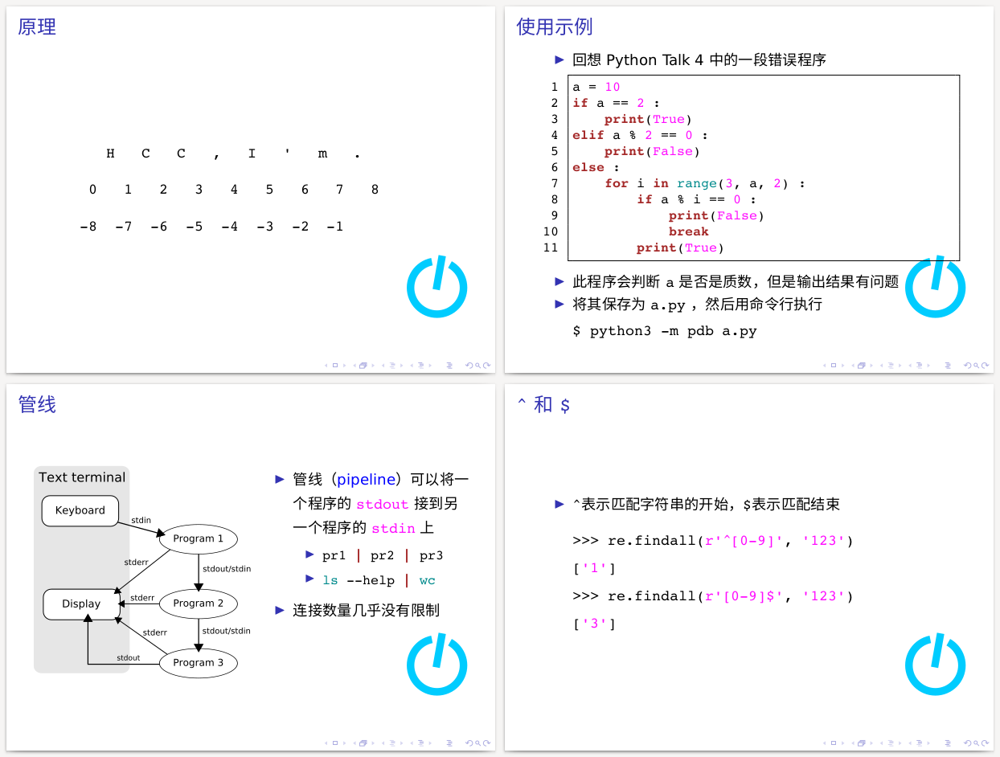
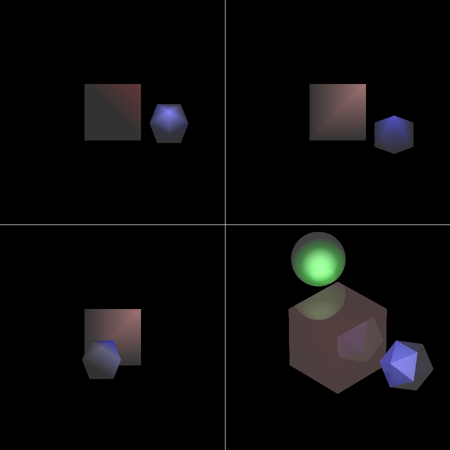
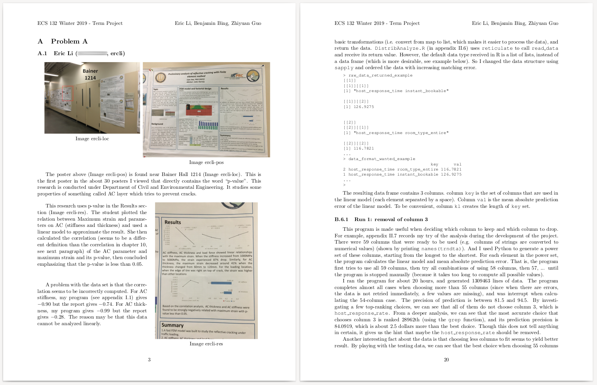

HCCTalks¶
Some programming related tutorials in Chinese, written in XeLaTeX
Download page: https://github.com/lxylxy123456/HCCTalks/releases/latest (supports 4:3 or 16:9 aspect ratio)
Screenshot (from PythonTalk{02,11}, BashTalk02, RegExpTalk01):


cs188¶
ECS 188: Ethics in an Age of Technology paper and presentation
Presentation Video on YouTube:

Screenshot of presentation slides (left) and paper (right):

bresenham-logisim¶
Implementation of Bresenham’s line algorithm using logisim (logic circuit)
GIF demo here.

ECS175¶
Computer Graphics class homework demo
Complete list of demos here
Phong lighting & Ray tracing demo:

(The green sphere is expected to be only visible in the lower-right screen)
Bezier & B-spline curve demo:


ECS132¶
ECS 132: Probability & Statistical Modeling for Computer Science class term project paper
Group members: Eric Li, Benjamin Bing, Zhiyuan Guo
Screenshot:
